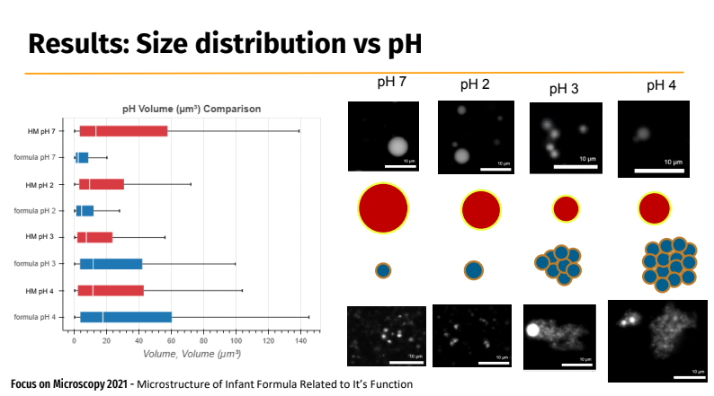

Exercise
Contents
Exercise#
Big Data definition#
Big Data - files that are complicated to process using conventional computer or software.
Example#
Table with more than 1,048,576 rows would be impossible to process in MS Excel. Python, R and MatLab are limited by RAM and memory.
Solution#
Use specialized environment as Metacentrum computers, specialized servers (Mazlík) or Google Collab!
Practical example#
Goal#
Load both data sets
Clear NaN values
Visualize Area distribution
Decide statistical distribution (parametric/nonparametric)
Define statistic hypothesis
Compare Area distributions
Expected results from 3D measurements#

import pandas as pd
import numpy as np
import bokeh.plotting
import bokeh.io
!pip install --upgrade bokeh-catplot
bokeh.io.output_notebook()
Collecting bokeh-catplot
Using cached bokeh_catplot-0.1.9-py2.py3-none-any.whl (16 kB)
Requirement already satisfied: numpy in c:\users\schatzm\anaconda3\envs\ju-book\lib\site-packages (from bokeh-catplot) (1.24.1)
Collecting xarray
Using cached xarray-2022.12.0-py3-none-any.whl (969 kB)
Collecting numba
Using cached numba-0.56.4.tar.gz (2.4 MB)
Preparing metadata (setup.py): started
Preparing metadata (setup.py): finished with status 'error'
error: subprocess-exited-with-error
python setup.py egg_info did not run successfully.
exit code: 1
[8 lines of output]
Traceback (most recent call last):
File "<string>", line 2, in <module>
File "<pip-setuptools-caller>", line 34, in <module>
File "C:\Users\schatzm\AppData\Local\Temp\13\pip-install-tp1x2x0e\numba_0d50953501d04246add45331d2736b04\setup.py", line 51, in <module>
_guard_py_ver()
File "C:\Users\schatzm\AppData\Local\Temp\13\pip-install-tp1x2x0e\numba_0d50953501d04246add45331d2736b04\setup.py", line 48, in _guard_py_ver
raise RuntimeError(msg.format(cur_py, min_py, max_py))
RuntimeError: Cannot install on Python version 3.11.0; only versions >=3.7,<3.11 are supported.
[end of output]
note: This error originates from a subprocess, and is likely not a problem with pip.
error: metadata-generation-failed
Encountered error while generating package metadata.
See above for output.
note: This is an issue with the package mentioned above, not pip.
hint: See above for details.